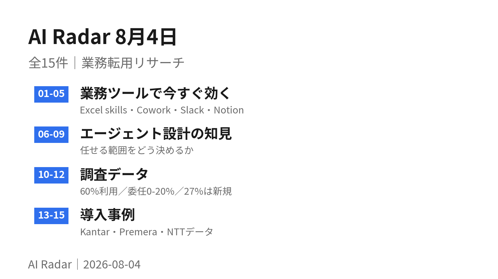
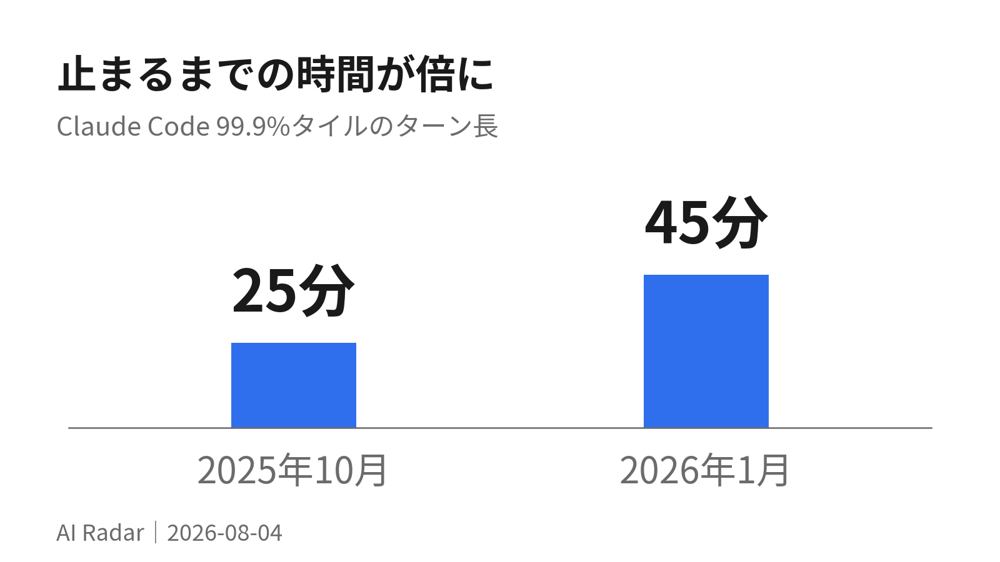
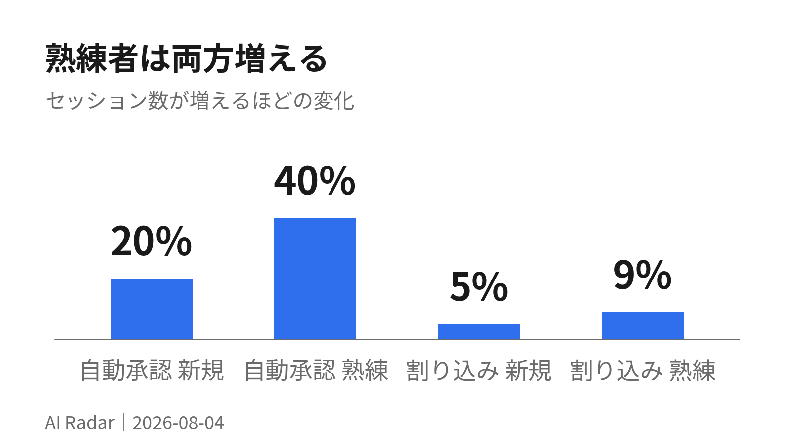
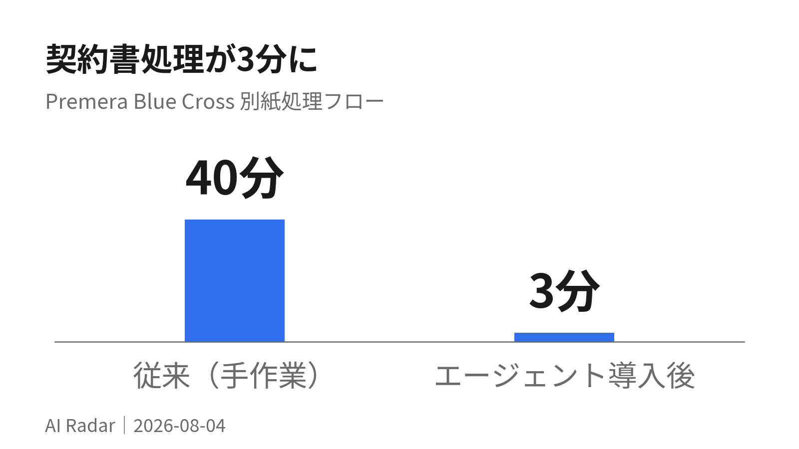

AI Radar 8月4日

全15件を4つに分けた。01〜05は今日から触れる機能（Excel の Copilot が SKILL.md を読むようになった、Cowork がノートPCを閉じても動く、など）。
06〜09はエージェントに任せる範囲の設計。Anthropic が「熟練者ほど自動承認も割り込みも増える」という一見矛盾したデータを出した。
10〜12は調査データ。「AIを6割の仕事で使うが、完全に任せられるのは0〜20%」という数字がいちばん効く。
13〜15は導入事例。3日→120秒、40分→3分、6〜9カ月→150秒。気になるものだけ開いてほしい。
業務ツールで今すぐ効く
01Excel の Copilot が SKILL.md を読むようになった
Microsoft が Excel 向けに skills を導入した。決算の締め、DCF の作成、月次レポートの更新といった繰り返しの手順を、オープン標準のマークダウンファイル（SKILL.md）に書いて OneDrive に置くだけで Copilot が拾う。毎回ゼロから指示する必要がなくなる。
かんたんに言うと「うちのやり方」をメモに書いて置いておくと、Excelの中のAIがその通りに作業してくれるようになった。手順書がそのまま指示書になる。
詳しく読む
同じ更新で、財務データのコネクタが CB Insights・Daloopa・FactSet・Morningstar・PitchBook・S&P Global（Kensho の Deterministic Retrieval） に拡張された（5月の LSEG・Moody's に追加）。評価の基準として Financial Modeling Institute（FMI） の実務モデリング事例ライブラリを採用している点も明記されている。
追跡性の機能も入った。実行前に Plan with Copilot で「どのセル範囲・どのシート・どの数式・どの前提を書き換えるつもりか」を出させられる。変更後は「変更履歴」ペインで Copilot による編集が人の編集と並んで帰属表示される。
提供状況は、Personalization・ワークブックルール・組み込みskills・コネクタ・Plan with Copilot・変更帰属が Web / Windows / Mac で一般提供。カスタム skills は Insiders 提供中で、翌月に一般提供予定。パートナー製 skills は2026年Q3。
SKILL.md という同じ形式が Claude 側にもあることが重要で、業務手順の記述が特定ツールに閉じなくなってきている。すでに書いてある手順書があるなら、Excel 用に書き直すのではなく、置き場所を変えるだけで動くか試す価値がある。
出典: Copilot in Excel: Built for the era of Frontier Finance（2026-06-25）
02Claude Cowork が Web とモバイルへ。端末を閉じてもタスクが走る
7月7日の更新。Claude Cowork がデスクトップに加えて Web とモバイルで使えるようになった。セッションをリモートで実行する（ベータ）ため、セッションもファイルもアカウント側に保存され、どの端末からでも続きができる。
かんたんに言うとパソコンを閉じても作業が止まらなくなった。決まった時刻に走る自動タスクも、パソコンの電源が入っていなくても実行される。
詳しく読む
要点は3つ。ノートPCを閉じても作業が継続すること。スケジュール実行のタスクが、どの端末もオンラインでなくても走ること。そしてチャットと Cowork が統合され、プロジェクトとアーティファクトの置き場所が1つになったこと。展開は Max プランから数週間かけて順次。
定時実行の自動化を組んでいる場合、「実行時にPCが起きているか」という前提を外せるのが実質的な変化。朝の定期処理をローカル前提で組んでいるなら、リモート実行に寄せると取りこぼしがなくなる。
03Claude の Microsoft 365 コネクタが「読む」から「書く」へ
同じ7月7日の更新。Microsoft 365 コネクタに書き込みツールが追加された。メールの下書き・送信・整理、カレンダーの予定管理、メールボックス設定の変更、OneDrive と SharePoint 上のファイル作成・更新ができる。
かんたんに言うとこれまで「探して読む」だけだったものが、「返信を書いて送る」「予定を入れる」まで踏み込めるようになった。ただし Teams は読み取り専用のまま。
詳しく読む
読み取り・検索は従来通り。Teams は read-only のまま。有効化には Microsoft Entra の管理者が更新後の権限セットに同意したうえで、組織の管理者が機能を有効にする必要がある。
出典: Release notes — July 7, 2026 / Set up the Microsoft 365 connector
04Slackbot がスライドを作り、ダッシュボードを会話の中に置く
7月30日の Slack Feature Drop。Slide Creation は、Slackbot との会話から Google スライドか PowerPoint を自社テンプレートを使って生成する。Surfaces は、レポートやダッシュボードを会話の中に直接組み立て、並べ替え・絞り込み・掘り下げができる。チャンネルのタブにピン留めすると、チーム全員が同じライブデータを見る形になる。
かんたんに言うとSlackで話しているうちに資料ができ、集計表もその場に出る。BIツールを開かなくても、チーム全員が同じ数字を見られる。
詳しく読む
同時に、Canvas に見出しから自動生成される目次が付いた。チャンネルへの一時参加（今日だけ／48時間／1週間で自動退出、専用のサイドバー区画に分離）も追加。1つ前の6月の Feature Drop では Slackbot Memory（在籍が長いほど文脈を覚える）、ネイティブチャート（生データをその場でグラフ化）、Slackbot MCP（Google・Atlassian・Box・Notion・DocuSign などに到達）が入っている。
Surfaces のピン留めは「報告の作り方」を変えるタイプの機能。定例で数字を貼り直しているものがあるなら、静的なスクショではなくタブに置く形に移すと、更新作業そのものが消える。
出典: Slack Feature Drop — July 2026 / Slack Feature Drop — June 2026
05Notion のエージェントがカレンダーを握り、Workers は8月11日から従量課金
Notion の7月更新をまとめて3点。7月16日、エージェントにカレンダーツールが付いた — 「今日の予定は?」「Sandraとの打ち合わせを13時に動かして」「明日の14〜17時で日程調整リンクを作って」がチャットから通る。デスクトップのみ、モバイルは近日。
かんたんに言うとNotionのエージェントが予定を見て動かせるようになった。作った自動処理を同僚に配れるようにもなり、無料お試し期間は8月11日で終わる。
詳しく読む
7月9日、Notion Workers を共有できるようになった。 Can connect は同僚が使えるだけ、Full access は改変もできる。1人が作った Salesforce 用 Worker を、営業とマーケの両方のエージェントから使う、といった配り方ができる。
そして8月11日から Workers が Notion クレジット消費に切り替わる（現在は Business / Enterprise プランでベータ中につき無料）。7月24日にはクレジットダッシュボードに Workers の使用量が表示されるようになっており、ベータ終了前に消費量を見積もるための猶予という位置づけ。あわせて7月8日に Notion Agents の iOS アプリが出ている。
出典: New calendar tools for your agent（2026-07-16） / Share Notion Workers across your team（2026-07-09） / Workers, now in your Notion credits dashboard（2026-07-24）
エージェント設計の知見
06Claude Code の最長ターンが3ヶ月で25分→45分に伸びた
Anthropic が Claude Code と公開APIの数百万件の対話を分析した。パーセンタイルは「上位0.1%の極端な例」を指す">99.9パーセンタイルのターン長（Claudeが止まるまでに働き続けた時間）が、2025年10月から2026年1月で25分未満から45分超へほぼ倍増した。中央値は約45秒で、99パーセンタイル未満はほぼ横ばい。伸びているのは裾だけ。
かんたんに言うとAIが人に確認せず走り続ける時間は、上位0.1%の場面で3ヶ月のうちに2倍近くになった。ただし普段の作業は45秒程度で、伸びているのは「一番野心的な使い方」だけ。
詳しく読む

重要なのはこの伸びがモデルの新リリースをまたいで滑らかだったこと。能力だけで決まっているなら発表のたびに段差が出るはずで、そうならなかった。つまり利用者が時間をかけて信頼を積み上げている分が大きい。社内利用では、8月から12月にかけて最難関タスクの成功率が倍になると同時に、1セッションあたりの人の介入が5.4回から3.3回へ減った。
比較対象として METR の評価が挙がっている。Opus 4.5 は「人間なら約5時間かかるタスク」を50%の成功率でこなせるとされるが、実際の Claude Code の99.9%タイルは約42分。理想環境での能力と、実際に与えられている裁量の間に差がある（記事は deployment overhang と呼んでいる）。
「AIにどこまで任せるか」は能力ではなく運用側が決めている、と数字で言われている。任せる時間が短いままなら、それはモデルの限界ではなく自分の設定の問題である可能性が高い。1回の依頼の粒度を意識的に大きくしてみる価値がある。
07熟練者ほど自動承認する。そして熟練者ほど割り込む
同じ調査から。新規ユーザー（50セッション未満）が全自動承認を使うのは約20%のセッション。750セッション使う頃には40%超に上がる。一方で割り込み率も、10セッション程度の新規で5%、熟練者で約9%へ上がる。
かんたんに言うと慣れた人ほど「いちいち聞かなくていい」と設定を緩める。同時に、慣れた人ほど作業中に「そこは違う」と口を出す回数が増える。監視の仕方が変わっただけで、放任しているわけではない。
詳しく読む

矛盾に見えるが、監督の方式が切り替わっているだけ。新規ユーザーは1手ごとに承認するので途中で止める必要がない。熟練者は走らせておいて、おかしくなったときだけ入る。公開APIでも同じ傾向で、最小複雑度のタスクではツール呼び出しの87%に人が関与しているのに、高複雑度では67%まで下がる。
Anthropic はここから政策提言まで踏み込んでいる。「すべての操作に人の承認を求める」という規制の仕方はするな、と。摩擦を生むだけで安全上の利益が伴わない。見るべきは人が介入できる位置にいるかどうかであって、介入の形式ではない。
社内でAI利用ルールを作るときに直結する。「全部確認する」を義務にすると、慣れた人の使い方を壊す。 代わりに「途中で止められる仕組みがあるか」「何が起きたか後から見えるか」を条件にするほうが、実態に合っている。
08Claudeが自分から止まる理由の35%は「選択肢の提示」
同じ調査の別の切り口。複雑なタスクでは、Claude が自分から確認のために止まる回数のほうが、人が割り込む回数より多い。 最も複雑な区分では、最小複雑度の2倍以上の頻度で聞き返している。
かんたんに言うと難しい仕事ほど、AIのほうから「どっちにしますか」と手を止めて聞いてくる。人が止めるより、AIが自分で止まるほうが多い。
詳しく読む
50万件のサンプルから、止まる理由の内訳が出ている。
| Claudeが自分で止まる理由 | 人が割り込む理由 | ||
|---|---|---|---|
| 複数案のどれにするか提示する | 35% | 足りない技術的文脈や訂正を与える | 32% |
| 診断情報やテスト結果を集める | 21% | 遅い・固まっている・やりすぎ | 17% |
| 曖昧な依頼を明確にする | 13% | 十分助けてもらったので自分で進む | 7% |
| 認証情報・トークン・権限を要求する | 12% | 次の手は自分でやりたい | 7% |
| 実行前の承認・確認を取る | 11% | 途中で要件を変更する | 5% |
リスク面の数字も出ている。公開APIのツール呼び出しの80%は何らかの安全装置（権限制限や人の承認）を持つ環境からで、73%は何らかの形で人が関与、不可逆な操作は0.8%のみ。用途はソフトウェアエンジニアリングがほぼ50%を占め、医療・金融・セキュリティは出始めた段階。
止まる理由の1位が「選択肢の提示」なのは、指示の時点で選択基準を渡しておけば止まらないということ。「どちらがいいですか」で止められた経験があるなら、次から優先順位（速さ優先か、正確さ優先か）を先に書くだけで往復が減る。
09組織プラグインはグループ別に配れる。ただし「最も緩い設定」が勝つ
Claude の Team / Enterprise 向けプラグイン管理。組織のマーケットプレイスに置いたプラグインは、「既定でインストール／インストール可能／非表示／必須（外せない）」の4段階で配布を制御できる。Enterprise ではさらにグループ単位で上書きでき、エンジニアには自動導入、法務には任意、他は非表示、といった分け方ができる。
かんたんに言うと部署ごとに配る道具を変えられる。ただし複数の部署に所属している人には、いちばん緩い設定が適用されるので、これを「見せない仕組み」として使ってはいけない。
詳しく読む
注意点が明記されている。複数グループに所属する人には「最も緩い」設定が適用される（必須 > 既定 > 任意 > 非表示）。A グループが「非表示」、B グループが「既定でインストール」なら、両方に属する人には入る。グループはアクセスを与えるためのものであってセキュリティ境界ではない、と Anthropic が明言している。本当に止めたいなら組織全体を「非表示」にしてから必要なグループにだけ開ける。
構成は、ZIPの手動アップロード（1マーケットプレイスあたり100個まで）か、プライベートGitHubリポジトリからの同期（500個まで、公開リポジトリは不可）。自動同期はバージョンを上げたPRがデフォルトブランチにマージされたときに走る（直接pushでは走らない）。同期失敗時にプラグインが一時的に消えることがあり、その場合はインストール設定がリセットされている可能性がある。
調査データ
10AIを使う仕事は約60%。でも「完全に任せられる」のは0〜20%
Anthropic の「2026 Agentic Coding Trends Report」より。社会的影響チームの調査で、エンジニアは業務のおよそ60%でAIを使っているが、「完全に委任できる」と答えたタスクは0〜20%にとどまる。
かんたんに言うとほとんどの仕事でAIを使っているのに、丸投げできる仕事はごくわずか。使っている＝任せている、ではない。
詳しく読む
矛盾ではなく、AIの使い方が「共同作業」だから、と説明されている。エンジニアが委任するのは検証が簡単なタスク（「正しいかどうかを嗅ぎ分けやすい」もの）か、バグ追跡用の使い捨てスクリプトのような低リスクなもの。概念的に難しい、設計判断が絡むものほど手元に残す。あるエンジニアの言葉として 「答えがどうあるべきか自分が分かっている場面で主にAIを使う。その能力は、ソフトウェアエンジニアリングを『難しいやり方』でやって身につけた」 が引かれている。
もう一つ効く数字がある。AI支援作業の約27%は、そもそもやらなかったはずの仕事だった。プロジェクトの拡張、あったら便利な程度のダッシュボード作り、手作業では割に合わない探索的な作業。時間短縮より産出量の増加のほうが効果として大きい、と結論している。
「使用率」を導入効果の指標にすると誤読することが分かる。60%使っていても委任は2割以下。逆に、27%が「やらなかった仕事」なら、削減時間ではなく増えた成果物の数で測るほうが実態に近い。社内で効果を説明するときの物差しを変える材料になる。
11楽天、1250万行のvLLMに7時間の単独作業で99.9%一致
同じレポートの事例。楽天のエンジニアが Claude Code に、vLLM（複数言語で1250万行のオープンソースライブラリ）に特定の活性ベクトル抽出手法を実装するという課題を出した。
かんたんに言うと巨大なソフトの中に新しい機能を作り込む仕事を、AIが7時間ぶっ通しで一人でやり切った。答え合わせをしたら数値のずれは0.1%以内だった。
詳しく読む
Claude Code は1回の実行で7時間の自律作業を行い、全工程を完了。 実装結果は参照手法に対して99.9%の数値的一致を達成した。
同じ「長時間実行」の項では、Fountain（現場人材管理プラットフォーム）が階層型マルチエージェントでスクリーニング50%高速化・オンボーディング40%短縮・応募者転換率2倍、物流顧客の新拠点の人員充足を1週間以上から72時間未満へ短縮した例も挙がっている。Augment Code の顧客では、CTOが当初4〜8ヶ月と見積もったプロジェクトが2週間で完了した。
7時間という数字は、項目06の「99.9%タイルで45分」と並べると意味が出る。普段の使い方の10倍のスケールで回している人がいるということ。手元のタスクで「これは長すぎる」と諦めているものがあるなら、想定が古い可能性がある。
12TELUS、13,000個の自作AIと50万時間。1回あたり40分
同じレポートの数字を2社分。TELUS（通信）は13,000件を超えるカスタムAIソリューションを社内で作り、エンジニアリングのコード出荷が30%高速化。累計50万時間以上を削減し、AIとの1やり取りあたりの平均削減は40分。
かんたんに言うと現場の人が自分で小さな自動化を1万3千個作った結果、会社全体で50万時間が浮いた。1回使うごとに平均40分。
詳しく読む
Zapier は全社でAI採用率89%、社内に800体以上のエージェントを配備。 デザインチームは顧客インタビューの最中に Claude のアーティファクトで試作を見せる。従来なら数週間かかるものを、その場で出している。
Anthropic 自身の例も具体的で、法務チームがマーケティング審査の所要を2〜3日から24時間に短縮。契約書のレッドライン、コンテンツレビューといった反復作業を自動化するワークフローを、コード経験のない弁護士が Claude Code で自作し、法務キューに届く前に振り分けるセルフサービスのツールを作った。
TELUS の「1万3千件」は1件あたりが小さいことを意味する。大きな自動化を1つ作るのではなく、40分の作業を潰すものを大量に作った結果。まず自分の週次の作業から40分単位のものを列挙するほうが、全社基盤を設計するより早い。
導入事例
13Kantar、雇用証明書が3日→120秒。HR問い合わせの40%が無人化
Microsoft が7月30日に公開した顧客事例。マーケティングデータ分析の Kantar が、人事問い合わせ用の 「people agent」 を導入した。実体は約10体のエージェント・60トピック・関連フローが連携するシステムで、実際に問い合わせを受けている People チームの担当者自身が作り、広げている。
かんたんに言うと人事への問い合わせに答えるAIを、人事の担当者たちが自分で作った。3日かかっていた証明書の発行が2分で終わり、問い合わせの4割は人が出ずに片付くようになった。
詳しく読む
従来3日かかっていた雇用証明書の発行が120秒で返る。 人が介在せず処理される人事問い合わせの割合は、2月時点の0%から約40%まで上昇。年末の目標は95%。
同じ記事には Microsoft 自身のクラウドサプライチェーンチームの例もある。「エージェントの前にリーン化」という方針で、まず6つの業務フローを可視化して単純化し、共通データ基盤を作ってから、計画・調達・充足・物流に70体以上の専用エージェントを配備した。結果は選定フローのサイクルタイム75%削減。記事は教訓を明記している — 壊れたプロセスにエージェントを重ねる前に、仕事そのものを簡素化せよ。
Kantar の要点は作った人が問い合わせを受けている本人だったこと。0%から40%まで積み上がったのは、実際に来る質問を知っている人が対象を広げ続けたから。業務を知らない人が設計すると、たいてい最初の10%で止まる。
出典: The next measure of AI momentum is work transformed（2026-07-30）
14Premera、従業員が900体を自作。契約書処理が30〜45分→約3分
同じ記事より。米国の健康保険 Premera Blue Cross（ワシントン州・アラスカ州）は、従業員自身にエージェントを作らせる方針を取った。Microsoft 365 Copilot と AIエージェントを組み立てるツール">Copilot Studio を、すでに日常的に使っているツールの中に置き、研修と明確なガードレールをセットで用意した。
かんたんに言うと「AIを作る係」を置くのではなく、困っている本人に作らせた。900個以上が生まれ、うち1つは40分の書類仕事を3分に縮めた。
詳しく読む

これまでに900体以上のエージェントが作られた。 そのうち契約書の別紙を扱うエージェントは、書類処理の自動化により手作業で30〜45分かかっていたフローを約3分に短縮した。
同記事の他の事例も数字が具体的。Levi Strauss & Co. では、エージェントが財務の標準業務手順書1,100本を分析し、18,000個の個別タスクを1日でカタログ化した。財務担当VPのコメントは 「定量化は不可能だと思っていた機会の大きさを、エージェントが測ってくれた」。EY の自律調達エージェントは、複数サプライヤーとコスト・納期・保証条件を同時交渉し、2025年10月のパイロット以来200件超を処理、来年は1,500件を見込む。
出典: The next measure of AI momentum is work transformed（2026-07-30）
15NTTデータ、商品コンセプトを150秒で。従来は6〜9カ月
国内事例。NTTデータが食品・飲料・消費財業界向けの商品企画特化型AIエージェントサービスを2026年7月から提供開始した。戦略整理から商品アイデア創出、コンセプト立案までを一気通貫で支援し、商品特徴・ネーミング・売上予測・提供価値に加えてコンセプト画像まで含む案を約150秒で生成する。
かんたんに言うと新商品の企画書を、絵まで含めて2分半で出すサービス。これまでは半年から9ヶ月かけていた工程。
詳しく読む
前提として、従来の商品企画には6〜9カ月程度を要するのが一般的という課題認識がある。その間に消費者の価値観が変わってしまう。加えて、ブランドガイドラインや過去の知見が活用されていない、アイデア創出が担当者の経験と発想力に依存する、という構造的な問題も挙げている。
構成は3フェーズ。準備フェーズで商品戦略・ブランドガイドライン・ターゲット情報をAIが参照できる形に構造化する。アイデア生成フェーズで多数の案を生成し、独自性・既存製品との優位性・ユーザーニーズ適合度で評価してランキング化する。コンセプト・画像生成フェーズでマーケターが選んだ案を具体化し、修正指示で磨き上げる。既存のグローバル消費財メーカー向けエージェントを基盤に、売上予測エージェントを新たに組み込んだ点が強化ポイント。同業界向けAIビジネス全体で2030年度までに累計300億円規模の売上を目標としている。
効いているのは生成の速さではなく準備フェーズのほうに見える。企業戦略やブランドガイドラインを「AIが参照できる形式に構造化する」工程を先にやっている。自社の判断基準を書き起こす作業を飛ばすと、出力は一般論にしかならない、という点は業界を問わず当てはまる。
Google Workspace は今日は見送った。 7月にGoogle ドキュメントで Gemini による画像・図解・インフォグラフィックの生成（7月28日）とコメントスレッドの要約・返信（7月28日）、スプレッドシートの「Gemini で入力」が11言語追加（7月7日）が出ているが、いずれも既存機能の言語拡張か描画機能で、業務転用の観点で新しい判断材料が少なかったため落とした。出典自体は実在する（workspaceupdates.googleblog.com の2026年7月分）。
Hugging Face 関連も今日は該当なし。 7月は InternScience の Agents-A1 系（4Bモデルと量子化版）や NVIDIA の Cosmos 3 Edge が出ているが、業務転用の観点で具体的な手順や数字に落ちるものがなかった。
国内事例はNTTデータの1件のみ。 富士通・NEC・NTTグループ各社を検索したが、効果の数字が一次ソース（プレスリリース）まで辿れるものがこれ以外に見つからなかった。まとめ記事には「業務効率◯%向上」という数字が複数出ているが、出所に到達できないため config.md の採用基準に従って見送っている。
検証の深さの内訳。 項目 01、05〜14 は一次資料の本文まで取得して数字・固有名詞を確認済み。特に項目06〜08（Anthropic の autonomy 調査）、項目10〜12（Agentic Coding Trends Report のPDF原文）、項目13・14（Microsoft の7月30日記事）、項目15（NTTデータのプレスリリース原文）は全文を読んで数字を拾っている。項目 02・03・04 は公式のリリースノート／Feature Drop ページの記載レベルでの確認にとどまる。出典URLはすべて実在を確認済み。
1点補足しておく。 項目06〜08 の出典（Measuring AI agent autonomy in practice）は2026年2月18日公開で、直近のニュースではない。過去の号で扱っていないこと、そして項目10・11 の数字と直接つながることから採用した。新着ではない点は明記しておく。
次号: 2026-08-05（水）